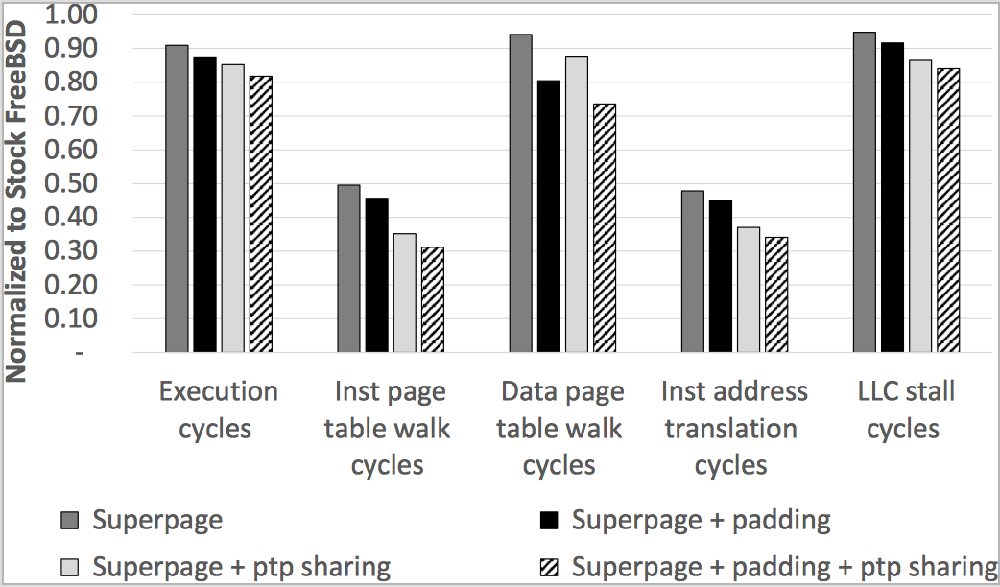
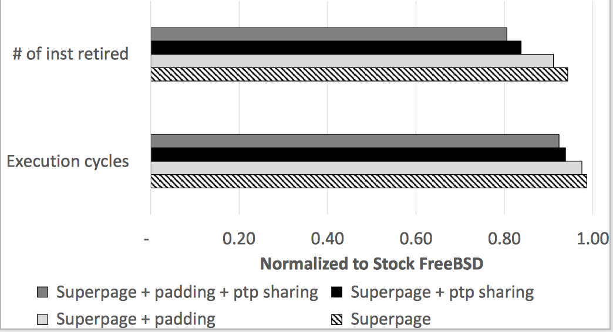
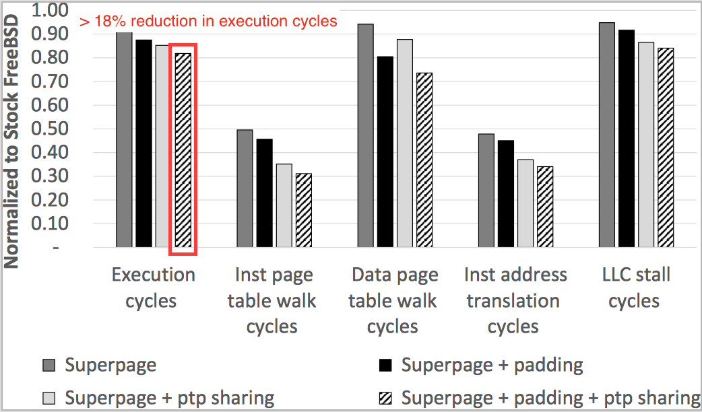

class: center, middle # On the Impact of Instruction Address Translation Overhead **Yufeng Zhou**¹, Xiaowan Dong², Alan L. Cox¹, Sandhya Dwarkadas² <div class="title-institution">¹Department of Computer Science, Rice University</div> <div class="title-email">{yufengz, alc}@rice.edu</div> <div class="title-institution">²Department of Computer Science, University of Rochester</div> <div class="title-email">{xdong, sandhya}@cs.rochester.edu</div> ??? I'm very excited to be here today to talk about the "title". --- # Instruction Address Translation  - Significant instruction address translation overhead. - PostgreSQL on a recent Intel Xeon processor: instruction address translation in progress during **14.9%** of execution cycles. - Intel documentation: worth investigating if >**5%**. ??? So, to begin with, in a virtual memory system, when the processor needs to fetch an instruction from memory, it begins with a virtual address. --- # Instruction Address Translation - **Superpages Present Opportunities**  ??? Conceptually, the processor tries the fast path first, and if there isn't a hit. Depending on how large of a range of addresses the translation covers --- # Instruction Address Translation - **Missed Opportunities** - Linux: No transparent and automatic superpages on code from a regular file system. Ugh. <font color="#ff6666">✘</font> - **FreeBSD**: transparent and automatic superpages on code from any file system. <font color="#006633">✔</font> - A conservative superpage policy: Don't bring in extra base pages merely for the purpose of creating superpages. <font color="orange">⁇</font> - Example: PostgreSQL on latest FreeBSD. - No superpage created under current policy. - A *simple* change in policy → ~2/3 of the main executable mapped with superpages. - **8.5%** reduction in execution cycles! ??? The problem with current implementations and prior work is that, although you get a varying number of superpages under different policies, and each policy excels in certain scenarios, existing policies share a common problem. That is that they essentially have a single policy for both code and data, and sometimes they just sort of ignore the code side. But as we know, code and data exhibit different locality and we showed just two slides earlier that the instruction address translation overhead is significant. In the rest of this talk, we are going to show techniques and simple heuristics that significantly reduce instruction address translation overhead. Say here that we are doing FreeBSD because it at least supports the creation of code superpages from regular file systems. This is emblematic of --- # Outline - Introduction - Problem #1: A superpage policy that is too conservative for code - Solution: Relax the superpage policy for code - Problem #2: The residual code region - Solution: Padding - Problem #3: Page table data duplication - Solution: Page table page sharing - Takeaways ??? The way this talk is organized, we are gonna basically go over the problems and present our solutions one after another. --- class: center, middle # Problem #1: A superpage policy that is too conservative for code. ??? With that, we are gonna jump right into problem #1 --- # PostgreSQL Main Executable (5.953 MB) Page Access Map - First 2M Region  --- # PostgreSQL Main Executable (5.953 MB) Page Access Map - No Superpage in First 4M  - Only X% pages are touched. So it isn't surprising that superpages aren't being created. --- # PostgreSQL Main Executable (5.953 MB) Page Access Map - No Superpage in First 4M, but Actually Close  - I/O clustering: The page fault handler reads from the disk at a 64KB granularity. - **Observation**: The 2M regions are only a few 64KB away from being fully resident. Really close to qualifying for superpages. --- # PostgreSQL Main Executable (5.953 MB) Page Access Map - No Superpage in First 4M, but Actually Close  - **Problem #1**: A superpage policy that is too conservative for code. - **Solution**: Bring in the missing 64KB clusters and create a superpage. - Occupancy threshold. ??? Now, whenever we aggressively does something in the OS, there is a question of threshold. --- # Relaxed Code Superpage Policy Evaluation  - 6 workloads, 4 thresholds (lower threshold is more aggressive) ??? We can see from this figure that for all of the applications, a threshold of 15 is sufficient. A lower threshold or in other words a more aggressive policy doesn't really make a difference beyond that point. We believe this observation is generally applicable because code exhibits locality in the sense that the compiler tries to place functions with caller-callee relationships next to each other in the binary executable, and so if a code region should generally be heavily accessed if it's accessed at all. --- # Instruction Address Translation's Impact on Data Address Translation  - The second-level TLB (STLB): shared between code and data. - Similar TLB organization in earlier Intel microarchitectures (e.g. Haswell (2013)). - **Realization**: Improved instruction address translation performance → Improved data address translation performance! --- # Improved Instruction Address Translation Performance → Improved Data Address Translation Performance  --- # Problem #1 and Solution Summary  - We dealt with problem #1. - And showed that improved instruction address translation performance → improved data address translation performance! --- class: center, middle # Problem #2: The residual code region. ??? And so that brings us to problem #2, which is essentially the residual code region. So how do we deal with it. --- # PostgreSQL Main Executable (5.953 MB) Page Access Map - Last "Almost 2M"  ??? The total size of the main executable is almost 6M, so almost three superpage-sized regions. The first two regions were shown earlier, and this is essentially the third region. --- # Problem #2: The Residual Code Region  - Code region rarely an integer multiple of 2M. - The residual code region: the < 2M leftover region. - 4KB base pages only. - Potentially hundreds of 4KB pages. - Example: PostgreSQL, > 64 of these pages accessed. - The L1 instruction TLB (ITLB): 64 4KB entries → spill into the second-level TLB (STLB). - <font color="#006633">Would be nice if we can use a superpage here.</font> ??? , potentially displacing 2MB page mappings for data --- # Solution: Padding - Pad out the residual code region so that it can be mapped as a superpage. - Two ways: - Ask the **linker** to extend the text section. - Modify the **kernel** to automatically extend the executable segment and fill in the gap. - Optimization: pages backing the data segment can be used as part of the padding.  ??? --- class: center, middle # Problem #3: Page table data duplication. --- # Problem #3: Page Table Data Duplication - Shared Libraries - Common library code referenced across different processes and applications: libc, libcrypto, libm, libthr, libssl, etc.  --- # Solution: Page Table Page (PTP) Sharing  --- # Padding Evaluation PostgreSQL user-space results  --- # Evaluation - Lower Pressure on Caches - PTP sharing: Page table data de-duplication. - Padding: Hundreds of leaf-level page table entries (PTEs) → a single upper-level PTE. --- # Evaluation - Lower OS Memory Management Overhead - Faster process creation and teardown. - PTP sharing: Insert/detach entire PTPs. - Padding: Hundreds of leaf-level PTEs → a single upper-level PTE.  --- # Padding PostgreSQL user-space results  --- # Reducing Instruction Address Translation Overhead - Side Effects - For reference, without techniques, instruction address translation in progress during **~8%** of execution cycles. - Execution cycles reduced by more than the instruction address translation overhead. - Data access is synergistically benefiting from less contention in the STLB and caches. --- # Outline - Introduction - Problem #1: A single superpage policy that is too conservative for code - Solution: Relax the superpage policy for code - Problem #2: The residual code region - Solution: Padding - **Takeaways** --- # Takeaways - Non-trivial overhead of instruction address translation. - Overhead exacerbated by two trends. 1. Applications are getting bigger and more complex. 2. The level of parallelism is increasing. - Two problems and three solutions. - Conservative code superpage policy: relax the policy for code. - The residual code region: padding. - Improved instruction address translation performance → improved data address translation performance. - Many modern microarchitectures share the STLB between instruction and data translations. ??? 1. Applications are getting bigger and more complex. - The Clang compiler: 31MB (2012) → 56MB (2018). - A recent version of Node.js: 20 shared libraries. 2. The level of parallelism is increasing. - Multi-core and SMT. - Multi-process applications (e.g. PostgreSQL) and multi-process workloads (e.g. parallel compilation with Clang).